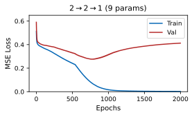
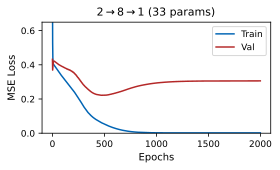

Part 4: Where does the “intelligence” in a language model actually come from?
Probabilistic Machine Learning
University of Virginia Farzad Farnoud
Fall 2026
In this lecture, we will learn about neural networks, which are a component of language models, in part by building on topics we have seen before, such as linear models and maximum likelihood.
Softmax regression on learned features
We have seen that count-based Markov models for predicting the next word hit the complexity wall quickly.
A language model instead computes a feature vector $\bphi(w_{1:t-1})$ based on previous words $w_{1:t-1}$ using a neural network and at the end uses softmax regression on it to produce the distribution of the next word $w_t$.
Question: How does a network compute features, and how are they learned?
Answering it needs:
1functions that build their own features;
2a way to compute gradients through them;
3training that generalizes.
Every piece uses tools from earlier chapters: maximum likelihood, the chain rule, the variance of a sum, priors.
Our language models so far counted how often each word follows a short context, and the number of possible contexts grows too fast for counting to work. A neural language model takes another route. In the diagram, a network turns the previous words into a feature vector, and the last layer, softmax regression as in the linear classification lecture, turns those features into a distribution for the next word. This raises the question of how a network computes its features, and how it learns them.We need three things to answer it, one for each part of this lecture: functions that build their own features from the input, a way to compute the gradient of the loss with respect to parameters deep inside such a function, and training that works on new data and not only on the examples we fit.Each of these uses a tool from an earlier chapter: the losses are negative log-likelihoods, the gradients come from the chain rule, a good starting point comes from the variance of a sum, and regularization comes from a prior.
The mind map of the deck. Entering pulls back from the opening slides to the whole map.This lecture has three parts. In the first, we see why linear models fall short and build networks from layers with nonlinear activations. In the second, we compute a network's gradients by backpropagation. In the third, we train networks so that they work on new data.The map zooms into the first branch.Let's start with features, layers, and networks.
Feature engineering
A simple model can only use the representation it is given. Feature engineering chooses features $\bphi(\bx)$ by hand so that it works.
Example: one-second waves $\bx\in\bbR^{64}$ at 2 cycles per second (class 0) or 3 (class 1), random phase, noise standard deviation 0.7; 200 training waves per class.
Logistic regression on two raw samples, $(x_{17},x_{30})$: 53.5% right on its training waves, 48.2% on 2,000 new ones.
The same model on $\bphi(\bx)=(|X_2|,|X_3|)$, the Fourier amplitudes at 2 and 3 cycles per second: 100% on training and new waves. Its line lies close to $|X_3|=|X_2|$.
Even all 64 raw samples give only 66% on training and 52% on new waves: a wave and its negative are equally likely, so both classes average to zero.
The Fourier amplitude keeps the frequency and ignores the phase, the nuisance here.
With the samples $x_k$ at times $t_k=k/64$, $k=0,\dots,63$, the amplitude at $f$ cycles per second is
\[\htmlClass{dk1}{|X_f|=\frac{2}{64}\,\Big|\sum_{k=0}^{63}x_k\,e^{-2\pi i f t_k}\Big|},\]
which is about 1 for a wave of frequency $f$ and amplitude 1, whatever its phase, and near 0 for a wave of the other frequency (the noise adds a little).
A wave $\sin(2\pi ft+\varphi)$ with $\varphi$ uniform on $[0,2\pi)$ has mean $\E[\sin(2\pi ft+\varphi)]=0$ at every $t$, in both classes. A linear score $\langle\bw,\bx\rangle+b$ then has the same mean in both classes; only its spread can differ, and a single threshold on it barely uses that.
Before neural networks, the features a model used were usually chosen by hand. We look at one example. Each input is one second of a noisy wave, and the two classes differ in how fast the wave oscillates. Each wave starts at a random point of its cycle, its phase. The panels show two waves of each class, with the sinusoid fitted to each drawn thick.First, we fit logistic regression to two of the raw samples of each wave. The left panel shows these two samples for a hundred training waves of each class, and the line is where the fitted model gives probability one half. The two classes form one cloud, and on new waves the model does no better than guessing.Now we fit the same model to two numbers computed from each wave: the amplitude of its component at each of the two frequencies. In the right panel the classes sit in opposite corners, and the fitted line separates them, on the training waves and on new ones. Only the representation changed.Using all of the raw samples does not help much. Because the phase is random, a wave and its negative are equally likely, so every sample has mean zero in both classes. A weighted sum of the samples then has mean zero in both classes too, and a threshold on it does little better than guessing.The amplitude keeps what separates the classes, the frequency, and discards what does not, the phase. Choosing it required knowing how the classes differ. In the rest of this lecture, we see how a network can learn such features from data.
Hand-designed features, and learned ones
Above the axis, hand-designed features; below it, learned ones (to scale). Fields: speech, images, text; no icon: a general method.
“Such feature engineering is important but labor-intensive and highlights the weakness of current learning algorithms: their inability to extract and organize the discriminative information from the data.”
Bengio, Courville and Vincent (2013)
Why now (around 2010)
Data: ImageNet (2009); its challenge set has 1.2 million labelled images in 1000 classes.
Compute: GPUs (2009, Raina et al.); AlexNet (2012) took five to six days to train on two GTX 580 GPUs.
Training methods: ReLU (2010), dropout (2012).
ILSVRC-2012, sorting photographs into 1000 categories: an ensemble of convolutional networks reached 15.3% top-5 error against 26.2% for the second-best entry, which averaged classifiers on Fisher vectors of hand-designed, densely sampled features.
For many years, each kind of data had its own hand-designed features, shown above the axis, with icons marking the field. For speech, mel-frequency cepstral coefficients did best among the representations Davis and Mermelstein compared. For images, SIFT and HOG describe small patches by histograms of gradient directions, and for text, the features were counts of words and n-grams.Learned features, below the axis, are almost as old. Rumelhart, Hinton and Williams showed in 1986 that with backpropagation, hidden units come to represent useful features, and convolutional networks soon read handwritten digits directly from pixels. Faster hardware, ReLU units and AlexNet came later.Bengio, Courville and Vincent describe what designing features by hand cost: it takes a lot of work, and it was needed because learning algorithms could not yet find the useful information in the data on their own.Learned features were not new in 2012. What changed around 2010 was data, compute and training methods: ImageNet provided labelled images on a large scale, graphics processors made training much faster, and ReLU units and dropout made deep networks easier to train. The third lecture of this part returns to the role of scale.In image classification, the result was clear. In the 2012 ImageNet challenge, an ensemble of convolutional networks made far fewer top-five errors than the best entry built on hand-designed features. A top-five error is a prediction whose five highest-ranked categories all miss the true one.
Two challenges: XOR
$x_1$
$x_2$
$\mathrm{XOR}(x_1,x_2)$
0
0
0
0
1
1
1
0
1
1
1
0
Find $w_1,w_2,b$ with $f(x_1,x_2)=w_1x_1+w_2x_2+b=\mathrm{XOR}(x_1,x_2)$ at all four points.
Three of the points fix $w_1$, $w_2$ and $b$; the fourth is then wrong.We start with two problems that a linear model cannot solve. The first is XOR, whose output is one when exactly one of its two inputs is one. In the figure, inputs with output one are teal and inputs with output zero are brown. Try to find weights and an offset for which a linear function matches the table, before going on.Each of the four inputs gives one equation in the three unknowns. The three inputs with at most one coordinate equal to one give simple equations: one involves only the offset, and the other two involve the offset and one weight each.These three equations determine all three unknowns. With those values, the fourth input, marked on the right, gets the wrong output.So no choice of weights and offset fits all four points: no linear function computes XOR.
Two challenges: the ellipse
Class 1 inside the ellipse $x_1^2+x_1x_2+x_2^2<3$ (13 points), class 0 outside (12 points).
A linear threshold classifier predicts class 1 where
\[w_1x_1+w_2x_2+b>0,\]
one side of a line. Here $(w_1,w_2)=(\cos\theta,\sin\theta)$.
However the line is turned and shifted, the count never reaches 0.
The class-1 points sit in the middle of the class-0 points, so every half-plane that contains them all contains class-0 points too.$\theta$ (degrees)$b$The second problem is to classify points by whether they lie inside a tilted ellipse: teal points inside, brown points outside. A linear threshold classifier predicts the teal class on one side of a line, the shaded side, and rings mark the points it gets wrong. Use the sliders to turn and shift the line, and try to classify every point correctly before going on.The best line we can find still misclassifies several points. The teal points sit in the middle, with brown points beyond them in every direction.One side of a line is a half-plane, and any half-plane that contains all the teal points also contains some brown points. So a linear classifier cannot separate a region enclosed by a curve.
Transform the features: XOR
Compute new features first, then combine them linearly:
In the $(h_1,h_2)$ plane $\hat y$ is linear: class 0 lies on its level line $\hat y=0$, class 1 on $\hat y=1$.
Both problems become easy if we first compute new features and then combine them linearly. For XOR, the hidden nodes of the network on the right compute the sum and the product of the two inputs, and the output combines them with fixed weights. The table checks all four inputs: the output equals XOR at each of them.The lower plot shows the four inputs in the plane of the new features, where the two class-one inputs land on the same point. The dashed lines are where the output equals zero and where it equals one. In these coordinates, a linear function computes XOR.
Transform the features: the ellipse
Three features of degree two:
\[\bh=(h_1,h_2,h_3)=(x_1^2,\ x_1x_2,\ x_2^2).\]
The boundary $x_1^2+x_1x_2+x_2^2=3$ becomes the plane
\[h_1+h_2+h_3=3,\]
linear in $\bh$: as in Ch. 6, quadratic features turn QDA's curved boundary into a linear one in a higher dimension.
Seen along the plane, the classes lie on its two sides. The hidden layer, 3 features for 2 inputs, is wider than the input.
azimuthelevationFor the ellipse, we use the three products of degree two: the two squares and the cross term. The ellipse's equation is a sum of these three features, so in the new coordinates the boundary is a plane. The figure shows the points of the ellipse problem in this feature space, together with the plane. In linear classification, quadratic features did the same for the curved boundary of QDA.If we turn the view to look along the plane, it appears as a line, with all teal points on one side and all brown points on the other: in the new space, a linear classifier separates the classes. Here the layer of features is wider than the input. The sliders turn the view.
Learning the transformation: linear layers
We saw hand-designed features enabled classification. Can we make this automatic instead?
Idea: add a layer that learns the features, then combine them via another. The simplest choice is linear for both:
a linear function of $\bx$, for any number of hidden units.
Any number of layers: $\bW_3(\bW_2(\bW_1\bx))=(\bW_3\bW_2\bW_1)\bx$.
Without a nonlinearity, a deep network computes the same functions as a single linear layer.Hand-designed features made both problems easy to classify. Instead of choosing the features by hand, could the network learn them?The idea is to use one layer that computes the features and another that combines them. The simplest learnable layer is linear: each hidden unit is a weighted sum of the inputs plus an offset. The expanded and compact diagrams on the right show the same network. Substituting the hidden layer into the output shows that the result is again a linear function of the input.Adding more linear layers does not help. A product of weight matrices is a single matrix, so the whole stack is still one linear layer.So without a nonlinearity, any number of linear layers, of any width, computes only linear functions. We need something nonlinear between the layers.
The fix: an activation function
A neuron applies a nonlinear activation $g$ to its weighted sum:
\[z=\langle\bw,\bx\rangle+b,\qquad a=g(z).\]
With $g$ between the layers, $\hat y=\langle\bw,g(\bA\bx+\bc)\rangle+d$ no longer collapses. ReLU is a hinge: zero, then a straight line.
Practice: $\bx=(2,-1)$, $\bw=(3,2)$, $b=-4$. Find $z$, $\relu(z)$ and $\sigma(z)$.
$z=6-2-4=0$, so $\relu(z)=0$ and $\sigma(z)=0.5$.
The fix is to apply a nonlinear function to each unit's weighted sum. A neuron computes the weighted sum z, and then the activation g of z. With g between the layers, the network is no longer a linear function of its input. The plots show the two common choices: ReLU, which is zero for negative inputs and the identity for positive ones, a hinge; and the sigmoid, which maps any input into the interval between zero and one.Let's practise with one neuron. Compute its weighted sum, and then its output with ReLU and with the sigmoid, before going on.The weighted sum is exactly at the corner of the hinge, so the ReLU output is zero. The sigmoid there is at its midpoint, halfway between zero and one.
With ReLU units, a network can compute XOR without a hand-made product. In the network on the right, both hidden units have the same weights and different offsets, so each is zero until the sum of the inputs passes its own threshold. The dashed lines in the lower plot mark where each unit turns on.The table follows the four inputs. At the origin, both units are off. With one input on, only the first unit is on, and its value goes straight to the output. With both inputs on, both units are on, and the second unit's negative output weight cancels the first. Two hinges at different thresholds produce XOR.
The multilayer perceptron
$\bh^{(0)}=\bx$, and for each layer $l=1,\dots,L$,
\[\bh^{(l)}=g\big(\bW^{(l)}\bh^{(l-1)}+\bb^{(l)}\big).\]
The superscript $(l)$ labels the layer; it is not a power. Layers are counted without the input: the network on the right has 3.
Layer $l$ has $n_{\text{out}}(n_{\text{in}}+1)$ parameters, a weight per connection and an offset per unit. A 3-4-2 network has $4\cdot4+2\cdot5=26$.
Stacking such layers gives the multilayer perceptron. Each layer multiplies the previous layer's vector by a weight matrix, adds an offset vector, and applies the activation to each entry. The superscript in parentheses names the layer. In the network on the right, every unit feeds every unit of the next layer, and we count the hidden layers and the output layer, but not the input.Each layer has one weight per connection and one offset per unit, so its number of parameters is its number of units times one more than its number of inputs. Adding these counts over the layers gives the network's total.
Your turn: count the parameters
A fully connected network maps 5 inputs through two hidden layers of 10 units each to 3 outputs: 5-10-10-3.
(a) How many parameters does each layer have?
(b) How many does the network have?
Let's practise counting parameters with the rule of the previous slide. A fully connected network has five inputs, two hidden layers of ten units each, and three outputs. Find the number of parameters in each layer, and then in the whole network, before going on.
Your turn: count the parameters
The 5-10-10-3 network. (a) Parameters per layer. (b) The total.
Solution
(a) Layer 1: $10\cdot(5+1)=60$.
Layer 2: $10\cdot(10+1)=110$.
Layer 3: $3\cdot(10+1)=33$.
(b) $60+110+33=203$ parameters.
Let's count one layer at a time.Each unit of the first layer has one weight per input and one offset.The second layer is the same, with the units of the first layer as its inputs.Each output unit reads all the units of the second hidden layer, plus its offset.The total is the sum over the three layers, and most of the parameters sit in the two hidden layers.
The forward pass
Bipolar XOR, targets $\pm1$; ReLU units, linear output:
2. $\bh=\relu(\bz)=(1,0)$: the second unit is off.
3. $\hat y=\langle\bw,\bh\rangle+d=2-1=1$, the target.
Computing the output from the input, with the weights fixed, is the forward pass. This network computes XOR with targets plus and minus one, using two ReLU units and a linear output; the weights are on the edges and the offsets next to the units. The pipeline below shows the same computation as a chain of simple operations, which is how we treat it in the next part. We follow one input through it.First, each hidden unit computes its weighted sum plus offset, called its pre-activation. The two values appear next to the units and as the vector z in the pipeline below.Second, ReLU keeps the positive pre-activation and sets the negative one to zero. The second unit is off for this input, so its output weight does not matter.Third, the output unit combines the hidden values with its weights and offset, and the result equals the target.
Your turn: trace the input (1, 1)
The network of slide 17, with input $\bx=(1,1)$ and target $-1$.
(a) The pre-activations $\bz$.
(b) The hidden values $\bh$.
(c) The output $\hat y$. Does it match the target?
Let's practise the forward pass on the same network, with both inputs equal to one and a target of minus one. Find the two pre-activations, then the hidden values, then the output, and check the output against the target, before going on.
What each unit adds over the unit square: teal positive, brown negative; the black line is $\hat y=0$.
Let's go through the three parts.This time, both pre-activations are positive.So both units are on, and ReLU passes their values through unchanged.The second unit's large negative output weight outweighs the first, and the output equals the target.The pictures show what each unit adds over the whole unit square, each with half of the output offset. The first unit adds a ramp that rises past one diagonal line, and the second subtracts a steeper ramp past another. Their sum, on the right, is positive in a band between two lines and negative outside it, and the black line, where the output is zero, separates the classes.
Output layers, distributions and losses
The hidden layers build the features; the output layer and the loss decide what the network predicts and how it is scored.
The output layer computes the parameters of a distribution for $y$ given $\bx$; the loss is that distribution's negative log-likelihood, so training is maximum likelihood.
task
output layer
distribution of $y\mid\bx$
loss: its negative log-likelihood
regression
identity, $\hat y=z$
$\cN(\hat y,\sigma^2)$ (Ch. 5)
squared error $(y-\hat y)^2$, up to scale and a constant
two classes
sigmoid, $p=\sigma(z)$
$\ber(p)$ (Ch. 6)
cross-entropy
$K$ classes
softmax, $\bp=\mathrm{softmax}(\bz)$
categorical$(\bp)$ (Ch. 6)
cross-entropy
Here $z$ (or $\bz$) is the output layer's linear function of the last hidden layer $\bh^{(L)}$.
Its last layer is softmax regression with inputs $\bh^{(L)}$; the hidden layers compute those features, and maximum likelihood fits both.So far we have looked at the hidden layers; now we turn to the last layer and the loss. The output layer computes the parameters of a distribution for the label given the input, and the loss is that distribution's negative log-likelihood. For regression, the output is the mean of a Gaussian, whose negative log-likelihood is, up to scale and a constant, the squared error. For two classes, a sigmoid output is the probability of class one, and the loss is the cross-entropy of logistic regression. For K classes, a softmax output gives the probability of each class, with the same loss.So a network classifier is softmax regression on the last hidden layer's values: the hidden layers compute the features, the last layer classifies with them, and maximum likelihood fits both together.
The ellipse with 2, 3 and 4 hidden units
Non-linear neurons work for our ellipse example as they did for XOR.
500 points uniform on $[-3,3]^2$, labelled by the ellipse; one hidden layer of ReLU units, sigmoid output, cross-entropy loss. Two units give a wedge; three and four close it into a polygon around the ellipse.
With 20% of the labels flipped at random, the best possible accuracy on new data is 80%: the irreducible error of Ch. 5. The network reaches 79% on its training data.
We now fit networks with ReLU units to the ellipse problem, with two, three and four hidden units, a sigmoid output and the cross-entropy loss. The shading shows the predicted probability of class one, the black line is where it equals one half, and the dotted curve is the true ellipse. The boundary is made of straight pieces: with two units it is an open wedge, and with three and four it closes into a polygon around the ellipse.In the last panel, some labels were flipped at random. Even the true ellipse misclassifies those points, so on new data no classifier can do better than the fraction of labels left unchanged. This is the irreducible error of Chapter 5, and the network's training accuracy comes close to it.
Many hinges make any curve
The ellipse needed only a few hidden units; how much can one hidden layer represent with more?
Let's see how ReLU can produce non-linearity in 1D.
With the hinges fixed at $t_j=\frac{j-1}k$, least squares fits $d$ and the $v_j$ to a smooth bump.
More units, more hinges, a closer fit:
One hidden layer with enough units approximates any continuous function on a bounded set as closely as wanted.units$k=$ The ellipse needed only a few hidden units. To see how much one hidden layer can represent as we add units, we look at a single input. Each unit adds a hinge, zero up to its kink and a straight line after it, so the output is made of straight pieces. With the kinks spaced evenly, least squares fits the output weights to a smooth bump. On the right, the dashed curve is the bump and the green curve is the fit with one unit; the ticks at the bottom mark the kinks, and above the plot is the fit's largest error.With two units, the fit gains a corner in the middle and follows the rise and fall of the bump.With four units, the fit is closer still, and its largest error is smaller.With eight, the two curves are hard to tell apart. This illustrates the universal approximation theorem: with enough units, one hidden layer can approximate any continuous function on a bounded set as closely as we want. The theorem does not say how many units we need, or how to find their weights. Try other numbers of units with the slider before going on.
Two spirals with two hidden layers
With enough units, one hidden layer approximates any curve; how intricate a region can a small network draw?
Two interleaved spirals, 200 points per class.
A 2-6-6-1 network: two hidden layers of 6 ReLU units and a sigmoid output; $6\cdot3+6\cdot7+1\cdot7=67$ parameters.
With the right weights, these 67 parameters separate the two spirals.
Question: Given only the data, how can we find such weights?
How the figure was made. The ideal regions label each point of the square by the arm it is nearer to. The weights were fitted to these labels beforehand, on a grid of points; inside the disk of radius 3 that holds the arms, the network agrees with them on 98.5% of a finer grid. The points were drawn along the arms with Gaussian noise of standard deviation 0.12, and each of them lies in its own class's region.
One hidden layer draws the spirals too: the best 2-16-1 network found in the same way (65 parameters) agrees with the ideal regions on 98.3% of the disk.
One hidden layer can approximate any curve if it has enough units. Now we ask how intricate a region a small network can draw. The data are two interleaved spirals of points, one for each class. The network drawn beside them has two hidden layers of ReLU units and a sigmoid output, which gives the probability of class one. Can a network this small separate the two spirals?With the right weights, it can. The shading is the network's predicted probability of class one at each point of the plane, and the black line is where that probability equals one half. The boundary winds between the two arms, and every point lies in the region of its own class. As with the hinges, the boundary is made of straight pieces.So a small network can fit data as intricate as these spirals, if its weights are right. We chose these weights knowing the exact shape of the spirals. Given only the data, how can we find such weights?Part 1 done: the map pulls back and enters backpropagation.That completes the first part. A network computes features with layers of weighted sums and nonlinear activations, and its output layer gives the parameters of a distribution whose negative log-likelihood is the loss.The second part takes up the question the first part ended on: how to find a network's weights from data. We start from one example and the loss it gives.
A small network and its loss
Consider a 2-2-1 ReLU network with the weights shown, one example $\bx=(1,2)$ with label $y=1$, and the squared loss $\cL=(\hat y-y)^2$:
The forward pass gives $\hat y=3$ against $y=1$, a loss of $4$.
Question: How should we change the nine parameters to reduce the loss?
Gradient descent (linear classification): $\theta\leftarrow\theta-\eta\,\partial\cL/\partial\theta$ for each of the nine. A first-layer weight acts on $\cL$ only through $z_i$, $h_i$ and $\hat y$.
We start with the smallest case of the question that ended the first part. The network on the right has two inputs, two ReLU units and one output, and every weight and offset has a value, written on its edge or beside its unit. There is one training example, with its label, and the squared loss measures the error.The forward pass fills in the values. The first hidden unit is on and the second is off, and the output overshoots the label, so the loss is well above zero.How should we change the nine parameters to make the loss smaller? Think about which method from an earlier lecture tells us how to move every parameter at once, before going on.Gradient descent, from the linear classification lecture, answers this: move each parameter a small step against the partial derivative of the loss with respect to it. So we need nine partial derivatives. The output weights and offset affect the loss directly, but a first-layer weight affects it only through a hidden unit's pre-activation, its ReLU and the output. The next slides build one method that handles every parameter in the same way, and slide thirty-five applies it to this network.
Partial derivatives
Backpropagation starts from one question: how much does a small change in an input change the output?
A partial derivative, such as $\partial z/\partial u$, shows the impact of a small change in one input on the output, with the other inputs held fixed.
For $z=uv$ at $u=5$, $v=1$: $\partial z/\partial u=v=1$ and $\partial z/\partial v=u=5$, so $\Delta z\approx1\cdot\Delta u+5\cdot\Delta v$.
To raise $z$ fastest for a step of a given size, move each input in proportion to its partial derivative: $\Delta u=1\cdot\eta$, $\Delta v=5\cdot\eta$ give $\Delta z\approx26\,\eta$.
To lower a loss, flip the sign: $\Delta\theta=-\eta\,\partial\cL/\partial\theta$, the gradient descent step of slide 25.
Backpropagation builds on partial derivatives. A partial derivative measures how much a small change in one input moves the output while the other inputs stay fixed, and nudging both inputs changes the output by approximately the sum of each partial derivative times its nudge. In the diagram, for the product of two inputs, the values flow forward above the edges.For a product, the partial derivative with respect to each input is the value of the other input. These appear below the edges in rose: here a change in v moves the output five times as much as the same change in u.If the inputs can move only by a small total amount, the output rises fastest when each input moves in proportion to its partial derivative, so the input with the larger partial derivative moves more.To decrease a loss, we move each parameter the other way, against its partial derivative. This is the gradient descent step of slide twenty-five, and it is why we need the partial derivative of the loss with respect to every parameter.
Building blocks of backprop
A network is built from a few simple operations, and each passes partial derivatives back by its own rule.
A network is made of a few simple operations, and for each of them we can write down how partial derivatives flow back through it. Each row shows one block, in general and on an example. Values flow forward above the edges, and backward messages flow back below them, starting from one at the output. A backward message is the partial derivative of the output, and later of the loss, with respect to the value on its edge. An addition passes its message unchanged to both inputs.A multiplication sends each input the value of the other input.A negation flips the sign of the message.
Building blocks of backprop
Three more blocks, the nonlinear ones, complete the set a network needs.
The remaining three blocks are nonlinear. ReLU acts as a gate: if its input is positive, it passes the message on unchanged, and if its input is negative or zero, it sends back zero.The sigmoid multiplies the message by its output times one minus its output. This factor is largest when the input is zero and the output is one half, and it shrinks toward zero as the input grows in either direction.Squaring multiplies the message by twice its input, so the larger the input, the more a change in it moves the output.So far, each block received a message of one. If a block receives some other message, every message it sends back is multiplied by it, because every change in the block's output is scaled by that same factor further along.
Chaining blocks
With the six blocks in hand, the next question is how blocks in a row combine their local partial derivatives.
Question: On the product chain, what are $\partial z/\partial z$, $\partial z/\partial s$ and $\partial z/\partial u$?
The chain rule as a message: it starts as 1 at $z$, and each block multiplies it by its local partial derivative on the way back.
Nonlinear: $\dfrac{dz}{du}=(-1)(2u)=-6$ at $u=3$. Check: $z=-u^2$.
Multiplying the local partial derivatives along the path gives the derivative of the output with respect to the start of the path.Now we chain blocks, starting with two products of the kind on slide twenty-seven: u times v gives s, and s times w gives z. The lower edges are labelled with the partial derivatives of z with respect to z, to s and to u. Work out these three values from the forward values before going on.The partial derivative of z with respect to itself is one. The second product multiplies it by its other input, w, which gives the partial derivative with respect to s, and the first product multiplies that by its own other input, v, which gives the partial derivative with respect to u. This is the chain rule, and it can be read as a message passed back through the graph: it starts as one at the output, and each block multiplies it by its local partial derivative.The same works for nonlinear blocks. We square u and then negate. The negation flips the sign of the message on its way back to s.The squaring block then multiplies the message by twice the value of u, which gives the derivative of the combined function at this point.Multiplying local partial derivatives along a path is the chain rule. Backpropagation is the chain rule applied one block at a time, from the output back toward the inputs.
Branching, and the backpropagation rule
Graphs also branch, and a block's message must travel back along every one of its inputs.
First $v=a+b$, then $z=uv$, with $u=5$, $a=3$, $b=1$: forward, $v=4$ and $z=20$.
At $\times$, the message 1 goes back to $u$ multiplied by $v$, giving 4, and to $v$ multiplied by $u$, giving 5.
At $+$ the message 5 passes to both $a$ and $b$. Check: $z=u(a+b)$, so $\frac{\partial z}{\partial u}=a+b=4$ and $\frac{\partial z}{\partial a}=\frac{\partial z}{\partial b}=u=5$.
Start with the message 1 at the output. At each block, multiply the incoming message by the block's local partial derivative and pass it to the block's inputs.Here the graph branches: a sum feeds one input of a product, and the other input comes in directly. The forward pass computes the sum and then the product.Backward, the product sends its message to each of its inputs, multiplied by the value of the other input.The sum passes its message unchanged to both of its inputs. Checking with calculus gives the same values.This gives the backpropagation rule. We start with a message of one at the output. At each block, we multiply the incoming message by the block's local partial derivative and send the result to the block's inputs. The message that reaches each input is the derivative of the output with respect to that input.
One unit of the network
To apply the blocks to a network, we first redraw the network as a computational graph, one unit at a time.
Take the first hidden unit of slide 25, at $\bx=(1,2)$:
Forward: $z_1=2\cdot1+1\cdot2-1=3$ and $h_1=\relu(3)=3$.
To apply the backpropagation rule to a network, we first redraw the network as a computational graph, one unit at a time. We start with the first hidden unit of the network on slide twenty-five, drawn the way we have drawn networks so far: two inputs, a weight on each edge, and the offset beside the unit.Its forward pass is a weighted sum of the inputs plus the offset, followed by the ReLU, which leaves a positive sum unchanged.
A neuron as a computational graph
The unit of slide 31, now built from the blocks of slides 27 and 28.
Each weight times its input is a $\times$ block, the sum with the offset is a $+$ block, and the activation is a ReLU block.
The forward values sit on the edges, as on slide 31.
Weights and offsets enter the graph like the data, so the backward pass gives their partial derivatives too.Here is the same unit as a computational graph. Each weight times its input is a product block, the two products and the offset go into one addition, and the ReLU is a block of its own. The weights and the offset are boxes, like the inputs.The forward pass fills in the values on the edges, the same values as on the previous slide.The parameters are inputs of the graph, so running the rule backward gives the partial derivative of the output with respect to each weight and offset, not only with respect to the data.
The 2-2-1 network and its parts
The whole network of slide 25 converts the same way, part by part.
Two hidden units, each like the one on slide 32.
The output unit, $\hat y=v_1h_1+v_2h_2+d$: two $\times$ blocks and a $+$ block.
The loss, $\cL=(\hat y-y)^2$: a negation of $y$, a $+$ block for the error $\hat y-y$, and a square.
Now the whole network of slide twenty-five, with the forward values computed there. It has two hidden units like the one we just converted, an output unit that is a weighted sum of the hidden values plus an offset, and the squared loss against the label. Each of these parts becomes a few blocks.
The 2-2-1 network as a computational graph
The network of slide 33 as one computational graph, with the forward values on the edges.
As a computational graph, each hidden unit becomes the pattern of slide thirty-two, the output unit becomes two products and an addition, and the squared loss adds three blocks: the label enters through a negation, an addition forms the error, and squaring it gives the loss. The forward values on the edges end with the loss on the right.
Backpropagation in the full network
The backward pass now runs on the graph of slide 34, from the loss back to all nine parameters.
We now run the backpropagation rule on the graph of the previous slide. Its forward values are in place above the edges, ending with the loss on the right, and the backward messages will appear below them.Backward, the message starts as one at the loss. The squaring block multiplies it by twice the error, and the additions pass it to the output offset and to both products of the output layer. Each output weight gets that message times its unit's hidden value, so the weight of the inactive unit gets zero.The same products send messages to the hidden values, each the message times the output weight. Then the ReLU gates act: the first unit is on and passes its message, and the second is off and blocks it.Finally, the first layer. The additions pass each unit's message to its offset and its two products, and each product sends its weight the message times the input. The first unit's parameters get nonzero messages, and the second unit's get zero, because its gate is closed. These nine messages form the gradient.
Gradient descent on the example
With slide 35's gradient, one step $\btheta\leftarrow\btheta-\eta\nabla\cL$ with $\eta=0.01$ moves the five parameters whose partial derivatives are not 0. To first order, $\Delta\cL\approx-\eta\|\nabla\cL\|^2=-0.01\cdot256=-2.56$.
With the nine partial derivatives from the backward pass, we take one step of gradient descent with a small step size. Each parameter moves against its partial derivative, so the five parameters with nonzero partial derivatives change, outlined in green, and the four of the inactive unit stay where they are. To first order, the loss should fall by eta times the squared length of the gradient.A forward pass at the new parameters gives the new loss. It fell, by a little less than the first-order prediction, because the prediction ignores the curvature of the loss.Now the backward pass at the new parameters. The message starts as one at the loss, and the squaring block multiplies it by twice the error, which is smaller than before because the prediction is closer to the label. Each output weight gets that message times its unit's hidden value.The products send messages to the hidden values, and the ReLU gates act as before: the first unit is on and passes its message, and the second is off and blocks it.The first layer's parameters receive their messages, and every partial derivative is smaller than in the first step. So the next step changes the loss less, and again a little less than the first-order prediction.Repeating the step, the loss keeps falling, by less each time: as the parameters approach a minimum, the gradient shrinks and the steps become smaller on their own.
Backward messages in matrix form
For a whole layer at once, the same messages take a compact matrix form.
One layer: $\bz^{(l)}=\bW^{(l)}\bh^{(l-1)}+\bb^{(l)}$ and $\bh^{(l)}=g(\bz^{(l)})$. Let $\bdelta^{(l)}=\partial\cL/\partial\bh^{(l)}$, the messages arriving at the layer's values.
Through $g$: each entry is multiplied by its unit's slope, giving $\bdelta^{(l)}\odot g'(\bz^{(l)})$, where $(\mathbf a\odot\mathbf b)_j=a_jb_j$.
Through $+$: the message passes unchanged.
Through $\times$: $h^{(l-1)}_i$ enters every $z^{(l)}_j$ with weight $W^{(l)}_{ji}$, so $\delta^{(l-1)}_i=\sum_jW^{(l)}_{ji}\,\delta^{(l)}_j\,g'(z^{(l)}_j)$.
\[\bdelta^{(l-1)}=\bW^{(l)T}\big(\bdelta^{(l)}\odot g'(\bz^{(l)})\big).\] For ReLU, $g'$ is 1 for a unit that is on and 0 for one that is off.We can write the same messages for a whole layer at once. The graph on the right is one layer: the previous layer's values times the weight matrix, plus the offsets, give the pre-activations, and the activation gives the layer's values. Delta of l denotes the messages arriving at the layer's values, below the edge on the right. We follow them back through the three blocks.First, the activation. Each unit's message is multiplied by the slope of g at that unit's pre-activation, entry by entry. For ReLU the slope is one for a unit that is on and zero for one that is off, so the block passes the message or blocks it, as on slide twenty-eight.Next, the addition of the offsets passes the messages on unchanged.Last, the product with the weight matrix. A value of the previous layer feeds every unit of this layer, so its message is the sum of their messages, each times the weight on the edge between them.In matrix form, that sum is the transposed weight matrix times the vector of messages. So the messages at the previous layer's values are the transposed weights times this layer's messages, each first scaled by its unit's slope. Repeating this from the output back to the input is backpropagation in matrix form.Part 2 done: the map pulls back and enters training.That completes backpropagation: the chain rule, run backward one block at a time, gives every parameter's partial derivative: each weight gets the message at its product times its input.The third part uses these gradients for training: gradient descent on the whole training set, stochastic gradient descent with minibatches, the step size, the starting weights, overfitting and its fixes, and the calibration of a network's probabilities.
Gradient descent on the training set
Backpropagation as we saw before gives one example's gradient; a training set of $n$ examples has the average loss $\cL=\frac1n\sum_{i=1}^n\cL_i$, so $\nabla\cL=\frac1n\sum_{i=1}^n\nabla\cL_i$.
The examples go through the network together, as the columns of a matrix: $\bH^{(0)}=\bX=(\bx_1,\dots,\bx_n)$ and $\bH^{(l)}=g\big(\bW^{(l)}\bH^{(l-1)}+\bb^{(l)}\big)$, with $\bb^{(l)}$ added to every column. One forward and one backward pass of matrix products give the average gradient.
$\theta\leftarrow\theta-\eta\,\dfrac{\partial\cL}{\partial\theta}$ for every parameter $\theta$, with $\cL$ the average loss and step size $\eta$.
A training set of two: slide 25's example and $\bx=(2,-1)$, $y=6$: $\bz=(2,3)$, $\bh=(2,3)$, $\hat y=8$, $\cL_2=4$.
$w_{11}$
$w_{12}$
$w_{21}$
$w_{22}$
$b_1$
$b_2$
$v_1$
$v_2$
$d$
$\nabla\cL_1$, example 1
4
8
0
0
4
0
12
0
4
$\nabla\cL_2$, example 2
8
−4
16
−8
4
8
8
12
4
average
6
2
8
−4
4
4
10
6
4
The examples disagree on $w_{12}$: example 1 says lower it ($+8$), example 2 says raise it ($-4$). The step follows their average.
Backpropagation gives the gradient for one example. Training fits the whole training set, whose loss is the average of the per-example losses, so its gradient is the average of their gradients. The examples are not processed one at a time: stacked as the columns of a matrix, they go through the network together, the forward and backward passes become matrix products, and the product that forms a weight's gradient adds up the examples' contributions. Gradient descent then moves every parameter against its partial derivative of that average loss, scaled by the step size eta. Here the training set has two examples, the one of slide twenty-five and a second one. The second loss happens to equal the first, but its gradient differs in almost every coordinate.The two examples even disagree on the sign for the weight w one two: the first pushes it down, and the second pushes it up. The update follows the average, so a single example can point the wrong way.
Stochastic gradient descent with minibatches
Even as matrix products, a pass over all $n$ examples costs time in proportion to $n$ at every step; stochastic gradient descent averages over a random minibatch instead.
Draw $B$ examples uniformly, with replacement: $\hat\bg_B=\frac1B\sum_{b=1}^B\nabla\cL_{i_b}$. Chapter 2's questions apply: is it unbiased, and how variable is it?
with $\sigma_k^2$ the variance of coordinate $k$ over the examples: unbiased, with the variance of a mean (Ch. 2) of independent draws (Ch. 0).
$B=4$ halves the standard deviation,
and $B=16$ cuts it to 1/4. Stochastic gradient descent in Ch. 6 used $B=1$.
$\partial\cL/\partial d$ for the 2-2-1 network on 100 synthetic examples; 50 minibatches per row; shaded: the full gradient $\pm\sigma/\sqrt B$.
Each index $i_b$ is uniform on $\{1,\dots,n\}$, so $\E[\nabla\cL_{i_b}]=\frac1n\sum_i\nabla\cL_i=\nabla\cL$, and the average of $B$ such terms has the same mean.
Draws with replacement are independent, so the variance of their sum is the sum of their variances (Ch. 0): $\Var\big(\sum_b\nabla_k\cL_{i_b}\big)=B\sigma_k^2$, where $\sigma_k^2=\frac1n\sum_i\big(\nabla_k\cL_i-\nabla_k\cL\big)^2$. Dividing the sum by $B$ divides the variance by $B^2$.
Even with matrix operations, a pass over the whole training set costs time in proportion to its size, at every step. Stochastic gradient descent averages instead over a minibatch of examples drawn at random, so its gradient is an estimate of the full gradient, and we can ask whether it is unbiased and how much it varies. If the examples are drawn uniformly, each sampled gradient has the full gradient as its mean, so their average is unbiased. The figure uses the network of the backpropagation example on synthetic data: the top row shows single-example estimates of the derivative with respect to the output offset, and the vertical line is the full-data value. They scatter widely, and many have the wrong sign.When we draw with replacement, the gradients in a batch are independent, so the variance of their average is the per-example variance divided by the batch size, by the variance of a sum from Chapter 0. Quadrupling the batch size halves the standard deviation.Another factor of four in the batch size halves it again. Stochastic gradient descent in the linear classification lecture used single examples; larger batches give steadier steps at a higher cost per step.
The training loop
Repeating the forward pass, backward pass and update over the data, batch by batch, is the training loop.
Batch: the $B$ examples used for one update. Iteration: one update. Epoch: one pass through all $n$ training examples, $n/B$ iterations.
Initialize $\btheta$ at random.
For each epoch: shuffle the data and split it into batches of $B$;
for each batch: forward pass, loss, backward pass (the batch's average gradient), update $\btheta\leftarrow\btheta-\eta\nabla\cL_{\text{batch}}$.
Stop when the validation loss stops improving.
Training repeats the forward pass, the loss, the backward pass and the update, as the diagram shows. One update is an iteration, and the examples it uses form a batch. An epoch is one pass through all the training data, so it contains as many iterations as there are batches. Minibatch gradient descent shuffles the data in every epoch, and it stops when the loss on held-out validation data stops improving.
Your turn: training terminology
A data set of 6,000 images is trained with batch size $B=200$ for 5 epochs.
(a) How many iterations are in one epoch?
(b) How many iterations does the training run take?
Let's practise the training vocabulary. A data set of six thousand images is trained with batches of two hundred images for five epochs. Find the number of iterations in one epoch, and then in the whole training run, before going on.
Your turn: training terminology
6,000 images, $B=200$, 5 epochs. (a) Iterations per epoch. (b) Iterations in all.
Solution
(a) $6{,}000/200=30$ iterations per epoch.
(b) $30\times5=150$ iterations. Each image is used once per epoch, 5 times in all.
Let's count.Each iteration uses one batch, so an epoch has as many iterations as the data has batches.Five epochs repeat that count five times, and each image is used once in each epoch.
The step size
The step size $\eta$ sets how far each update moves; one step on the example of slide 25 shows how much it matters.
Slide 35's gradient, in the order $w_{11},w_{12},w_{21},w_{22},b_1,b_2,v_1,v_2,d$: $\nabla\cL=(4,8,0,0,4,0,12,0,4)$, and $\|\nabla\cL\|^2=256$.
To first order, the step $\btheta\leftarrow\btheta-\eta\nabla\cL$ changes the loss by $\Delta\cL\approx-\eta\|\nabla\cL\|^2$: $-2.56$ at $\eta=0.01$.
$\eta=0.01$: the loss goes from 4 to 1.93.
$\eta=0.1$: 2.31; the step overshoots.
$\eta=1$: 25. Both ReLUs are off, and only $d$ still receives a gradient.
$\eta$ (log scale)$\eta=$ The step size decides how far each update moves. We take one step of gradient descent on the example of slide twenty-five, with its gradient from slide thirty-five. To first order, the loss then changes by minus eta times the squared length of the gradient. The plot shows the loss after one step against the step size, on a logarithmic axis, with the first-order prediction dashed.At the smallest of these step sizes, the loss falls less than predicted, because the prediction is only first order, but one step still removes about half of the loss.With a step ten times larger, the step overshoots: the first-order prediction falls below zero, while the actual loss has passed its minimum and risen again.With a step of one, the loss ends up far above where it started. The step pushes the first unit's pre-activation below zero, so both ReLU units are off, and only the output offset still receives a gradient. Try other step sizes with the slider before going on.
Random starting weights
Gradient descent needs a starting point, and the same weights for every unit will not do.
Suppose the hidden units of a layer start with the same incoming weights, offset and outgoing weight (right). They compute the same value on every example and get the same message $\delta$.
Unit $j$'s weight from input $x_i$ then has the gradient $\delta\,g'(z)\,x_i$: it depends on $i$ but not on $j$. Weights from different inputs move differently, but the units stay copies of one another, and the layer acts like a single unit.
With random weights, the units compute different values and receive different gradients, so they can learn different features.Before training, we must choose starting weights, and the same weights for every unit do not work. Suppose the hidden units of a layer start with the same incoming weights, the same offset and the same outgoing weight, as in the network on the right. They see the same inputs, so they compute the same value on every example and receive the same message.The messages on the right show this. A unit's weights from different inputs get different partial derivatives, since each is the message times the slope times its own input, but the corresponding weights of the two units get the same gradient. After every update the units are still copies of one another, and the layer acts like a single unit.Random starting weights break this symmetry: the units compute different values from the start, receive different gradients, and can learn different features.
Initialization
Random starting weights still need a scale, which decides whether the values keep their size through many layers; we start with the forward pass.
With independent weights of mean 0 and variance $\sigma^2$, independent of $\bh$ (Ch. 0, the variance of a sum):
where $n$ is the number of inputs to unit $j$, the width of the layer below. A linear layer keeps the scale with $\sigma^2=1/n$.
ReLU halves $\E[h^2]$, so ReLU layers need $\sigma^2=2/n$.
With $\sigma^2=4/n$, the activations grow at every layer.
$n\sigma^2$
Each term $W_{ji}h_i$ has mean 0 (the weight has mean 0 and is independent of $h_i$), so $\Var(W_{ji}h_i)=\E[W_{ji}^2]\,\E[h_i^2]=\sigma^2\E[h_i^2]$. The terms are uncorrelated, so their variances add: $n\sigma^2\E[h_i^2]$.
If $z$ is symmetric about 0, $\relu(z)^2$ equals $z^2$ on half of the outcomes and 0 on the other half, so $\E[\relu(z)^2]=\frac12\E[z^2]=\frac12\Var(z)$. Then $\Var(z^{(l+1)})=n\sigma^2\cdot\frac12\Var(z^{(l)})$, constant from layer to layer when $n\sigma^2=2$.
The figure: the plan's simulation, an input of 1,000 standard normal vectors in $\bbR^{100}$ and 10 ReLU layers of width 100 without offsets, one draw of the weights. Scaling every weight by $c$ scales layer $l$'s activations by $c^l$, so one draw gives every $n\sigma^2$.
The weights start random, and the question is how large they should be. A pre-activation is a sum of n products of weights and inputs, where n is the number of inputs to the unit, the width of the layer below; by the variance of a sum, its variance is n times the weight variance times the mean square input. On the right, with the weight variance that keeps the scale of a linear layer, the activations of a deep ReLU network shrink from layer to layer.ReLU sets about half of its inputs to zero, which halves the mean square. Doubling the weight variance compensates, and the activations keep their scale through all the layers.Doubling the variance again makes the activations grow by the same factor at every layer, so they explode. A deep network should start from weights that keep the scale. The slider varies n sigma squared.
Backward messages at initialization
The backward messages pass through the same weights, so the same variance argument applies to them.
From slide 37, $\delta^{(l-1)}_i=\sum_jW^{(l)}_{ji}\,\delta^{(l)}_j\,g'(z^{(l)}_j)$: a sum of $n$ terms, with $n$ now the number of units the value feeds. With weights of mean 0 and variance $\sigma^2$, independent of the messages,
With $\sigma^2=1/n$ and ReLU, the messages shrink toward the input.
$g'$ is 0 for about half the units, which halves the mean square, so $\sigma^2=2/n$ keeps the messages at their scale: the forward choice, when the layers have equal width.
With $\sigma^2=4/n$, the messages grow at every layer back.
$n\sigma^2$The same question arises for the backward pass, because the messages pass through the same weights. From slide thirty-seven, the message at a value is a sum, over the units it feeds, of a weight times that unit's message times its slope. By the same variance argument, its variance is n times the weight variance times the mean square of the scaled messages, with n now the number of units the value feeds. On the right, the network of the previous slide passes a random message back from its last layer to its input; with the weight variance of a linear layer, the messages shrink as they travel back.The ReLU slope is zero for about half the units, which halves the mean square, just as on the forward pass. Doubling the weight variance compensates, and the messages keep their scale all the way back, so the same choice serves both passes when the layers have the same width.Doubling the variance again makes the messages grow at every layer on the way back, so the gradients of the first layers explode. Try other values with the slider before going on.
Networks can memorize
A network trained this way can fit its training data too well: with enough parameters, exactly, noise included.
A regression on 8 noisy XOR points, 2-2-1 (9 parameters) and 2-8-1 (33 parameters) networks: training and validation loss against training epochs.
As the epochs go on, the training loss keeps falling while the validation loss rises: the network is fitting the noise of its 8 training points.


A network trained long enough can fit its training data too well. The plots come from a small regression problem on noisy XOR points, for a network with two hidden units and one with eight, and both show the loss against training epochs. In each, the training loss keeps falling toward zero, while the loss on held-out validation points reaches a minimum and then rises.Past the minimum, each additional epoch fits the noise in the training points better and new points worse. This is the bias and variance trade-off of Chapter 5, over training time, and it is why early stopping keeps the weights from the minimum.
Three fixes
Three standard tools keep a network from fitting the noise.
Early stopping
Keep the weights with the best validation loss; stop after $k$ epochs without improvement (the patience).
Dropout
In training, each unit is kept with probability $1-p$: a mask $m\sim\ber(1-p)$, output $m\,h$, so $\E[m\,h]=(1-p)h$. At test time all units are kept, scaled by $1-p$.
Weight decay
Adding $\frac\lambda2\|\btheta\|^2$ to the negative log-likelihood is MAP with the prior $\btheta\sim\cN(\bzero,\lambda^{-1}\bI)$: ridge regression (Ch. 5) for a network.
With the prior $\btheta\sim\cN(\bzero,\lambda^{-1}\bI)$, $\ln p(\btheta)=-\frac\lambda2\|\btheta\|^2+\text{const}$, so by Bayes' rule
and the minimizer of the penalized loss is the posterior mode, the MAP estimate (Ch. 3). For a linear model with Gaussian noise this is ridge regression (Ch. 5).
We look at three standard tools against overfitting. Early stopping monitors the validation loss during training and keeps the weights from the epoch where it was lowest; training stops once the validation loss has not improved for a set number of epochs, called the patience.Dropout sets each hidden unit to zero at random during training, independently at every step, so that no unit can rely on a particular other unit. A unit is kept with probability one minus p, so its expected output is scaled by one minus p. At test time every unit is kept and its output is scaled the same way, so the next layer sees the same average as in training.Weight decay adds a penalty on the squared length of the parameter vector to the negative log-likelihood. The sum is the negative log-posterior under a Gaussian prior with mean zero, so the fit is the MAP estimate: ridge regression from Chapter 5, applied to a network.
Double descent
How does the test error of slide 48's regression change as the hidden layer widens?
Training set: the 8 points of slide 48, corners $\pm1$ and edge midpoints 0, plus noise. Test set: 2000 uniform points, each with its nearest training point's noiseless target plus noise.
A 2-$k$-1 network whose first layer is frozen at random: $h_j(\bx)=\relu\big(\bu_j\cdot(\bx-\bc_j)\big)$, $\bu_j$ a random unit vector, $\bc_j$ uniform in the square. As on slide 22, least squares fits only $d,v_1,\dots,v_k$, minimum-norm when the data do not determine them.
The median test error falls to 0.40 at $k=5$, peaks at 0.83 at $k=7$, where the $k+1=8$ parameters can fit the 8 points exactly, and falls to about 0.25 for wide layers: double descent (Belkin, Hsu, Ma and Mandal, PNAS 2019).
Training the whole network on these points gives no peak: small networks often get stuck in poor fits, and Belkin et al. note that such suboptimal training hides the double descent curve.
Computed for this slide: medians over 300 random first layers.
Write $\btheta=(v_1,\dots,v_k,d)$ for the output parameters and $\bF$ for the $8\times(k+1)$ matrix whose row $i$ holds the hidden values at $\bx_i$, then a 1. Least squares minimizes $\|\bF\btheta-\by\|^2$.
For $k+1<8$, $\bF\btheta=\by$ has no solution in general, so the fit misses the noisy targets.
For $k+1=8$, $\bF$ is square and, for most draws, invertible: $\btheta=\bF^{-1}\by$ fits the 8 noisy targets exactly, however large its entries must be.
For $k+1>8$, when $\bF$ has rank 8, infinitely many $\btheta$ fit exactly; the one of smallest norm is $\btheta=\bF^T(\bF\bF^T)^{-1}\by$.
The test error is the mean squared error on 2000 new points, uniform in the square, each with the noiseless target of its nearest training point plus $\cN(0,0.3^2)$ noise, as slide 48's validation points are drawn. The fits shown are the draws whose test error is the median.
Belkin et al. find double descent with this model, which they call random ReLU features, on handwritten digits (MNIST) and house numbers (SVHN); the curve here is ours.
We now ask how the test error changes as the hidden layer grows, on the noisy XOR points of slide forty-eight. To make each fit exact and repeatable, the first layer is drawn at random and frozen: each hidden unit is a ReLU hinge along a random direction, with its kink through a random point of the square. As on slide twenty-two, least squares fits only the output weights and the offset; when many choices fit the data equally well, we take the one with the smallest norm. The curve shows the median test error against the number of hidden units, on a logarithmic axis. It falls at first, rises to a peak where the number of output parameters equals the number of training points, so that the fit can pass through every noisy target, and falls again for wider layers. This shape is called double descent.The three small panels show one fitted function each over the square, for a typical draw of the first layer, with the training points as dots. Below the threshold, the fit cannot pass through every noisy point. At the threshold, it passes through all of them, and to do so it dips far below zero in the middle of the square, away from every training point, where new points have targets near zero. Far past the threshold, many weight vectors fit the points exactly, and the one with the smallest norm passes through them without large swings in between, so the test error falls again.Training the whole network by gradient descent, as on slide forty-eight, shows no such peak: the test error falls steadily as the layer widens. Small networks often get stuck in poor fits, far from passing through every point. Belkin and coauthors note that this kind of suboptimal training masks the double descent curve, which is why the first layer is frozen here.
Double descent and regularization
Does regularization remove the peak of the unregularized fit?
Ridge on the output layer, $\lambda=0.01$ (Ch. 5): no peak. At $k=7$ the median test error is 0.30 instead of 0.83, and it falls steadily as the layer widens.
Nakkiran et al. (ICLR 2020) find double descent in deep networks trained to completion: ResNets of growing width on CIFAR-10 and CIFAR-100 with label noise. They note that many of these effects often do not appear with optimal early stopping.
With the ridge penalty there is no peak, and the widest layers have the lowest test error.
Computed for this slide, as on slide 50.
Next we see whether regularization removes the peak. The curve is again the median test error of minimum-norm least squares against the number of hidden units, on the XOR points.Adding the ridge penalty of Chapter 5 to the output layer gives the blue curve, which has no peak. At the threshold, the penalty gives up a little training error for much smaller weights, so the fit no longer swings to pass through every noisy point.Double descent is not limited to networks with a frozen random first layer. Nakkiran and coauthors observed it in deep networks for image classification with noisy labels, when every network is trained to completion. They also note that the peak often does not appear with the best early stopping, which keeps a network from fitting its training data exactly.So we can start with a large network and regularize it: with the penalty, there is no peak, and the widest layers do best. The third lecture of this part returns to how model size, data and error are related.
Calibration
Are a network's probabilities trustworthy? A classifier is calibrated if among its predictions made with confidence 0.8, about 80% are right, and so for every confidence.
Toy: 100 predictions at confidence 0.5, 45 right; 100 at 0.9, 60 right.
The predictions at confidence 0.9 are right only 60% of the time: the classifier is overconfident there.
Expected calibration error, the gap averaged over the predictions:
Next we ask whether a network's probabilities can be trusted. A classifier is calibrated if its confidence matches its accuracy: among its predictions made with a given confidence, that fraction is correct. In the reliability diagram, each bar shows the fraction of correct predictions in one group, at the group's confidence, and the dashed diagonal is perfect calibration. The low-confidence group of this toy classifier is close to the diagonal.The high-confidence group is correct much less often than its confidence says, so the classifier is overconfident.The expected calibration error averages the gaps between confidence and accuracy, weighting each group by its number of predictions.
Maximum likelihood rewards calibration
Calibration follows from the loss the network is trained with.
If the label has distribution $p$ and the model predicts $q$, the expected log loss is
Pretrained language models are well calibrated; post-training changes that (lecture 5).
Calibration is connected to the loss we train with. If the label has distribution p and the model predicts q, the expected log loss is the entropy of p plus the relative entropy from p to q, as in the linear classification lecture. The entropy does not depend on q, and the relative entropy is zero only when q equals p. The curve shows this for one label distribution: the expected loss is smallest at the true probability, and both under- and overconfident predictions cost more.Language models are trained with this loss, and pretrained language models are well calibrated. The fifth lecture of this part shows how post-training changes this.
Summary
Features are learned by layers of weighted sums with nonlinear activations; the output layer gives a distribution's parameters, and the loss is its negative log-likelihood.
Backpropagation is the chain rule run backward: each weight gets its message times its input.
Training is maximum likelihood with estimated gradients, a variance-preserving start and a prior.
Calibration is what maximum likelihood rewards.
Every piece came from earlier chapters: maximum likelihood, the chain rule, the variance of a sum, priors.
Next: tokens, embeddings and transformers.
To summarize: a neural network learns features with layers of weighted sums and nonlinear activations, and its output layer gives the parameters of a distribution whose negative log-likelihood is the loss. Backpropagation computes all the gradients by the chain rule, each weight getting its message times its input. Training is maximum likelihood with estimated gradients, a starting point that keeps the activations' scale, and a prior on the weights, and maximum likelihood also rewards calibrated probabilities. Each of these pieces uses a tool from an earlier chapter. The next lecture covers tokens, embeddings and transformers.